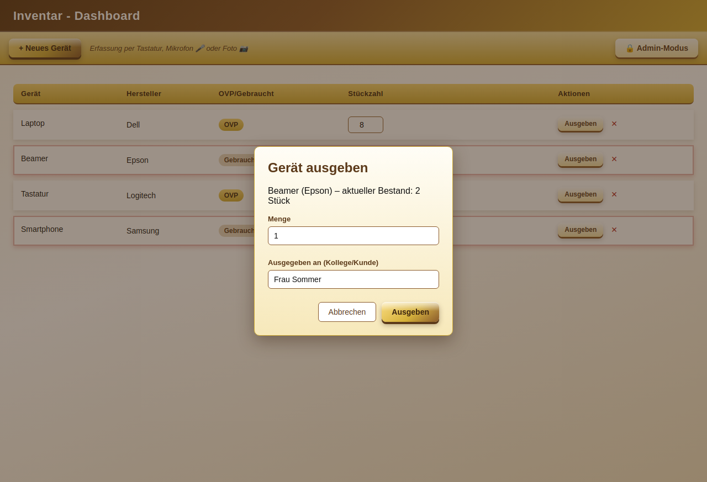

1. Die Geräteliste
Die obere Leiste zeigt für jedes Gerät vier Spalten:
| Spalte | Bedeutung |
|---|---|
| Gerät | Name des Geräts, optional mit Foto-Vorschau |
| Hersteller | z. B. Dell, Epson, Logitech |
| OVP/Gebraucht | Zustand des Geräts |
| Stückzahl | Aktueller Bestand, direkt im Feld änderbar |

2. Gerät erfassen
Über „+ Neues Gerät" öffnet sich der Erfassungsdialog mit drei kombinierbaren Eingabewegen:
⌨ Tastatur 🎤 Mikrofon 📷 Foto

Foto-Erkennung im Detail
- „📷 Kamera starten" klicken, Gerät fotografieren.
- Die App analysiert das Foto und schlägt einen Gerätenamen vor, inkl. Sicherheits-Prozentangabe.
- „Ja, übernehmen" trägt den Namen ein und springt direkt zur Stückzahl-Eingabe. „Nein, korrigieren" lässt manuelle Eingabe zu.
3. Ausgeben & Stückzahl-Reminder
„Ausgeben" öffnet einen Dialog für Menge und optionalen Empfänger (Kollege/Kunde). Die Stückzahl wird reduziert, die Ausgabe protokolliert. Fällt der Bestand auf 3 Stück oder weniger, erscheint automatisch eine Erinnerung.


4. Admin-Modus & Nachbestellungen nur für Admins
Über „🔒 Admin-Modus" oben rechts (PIN-geschützt) öffnet sich ein Admin-Bereich ganz oben im Inventar - Dashboard mit allen Download-Versionen der App und einer Nachbestellungen-Verwaltung. Das Anlegen und Ändern von Nachbestellungen ist ausschließlich im Admin-Modus möglich.


Ausführliche Details zur Nutzung des Admin-Modus stehen im Admin-Handbuch, technische Details zum Installations-Rollout im Skript-Handbuch.
🔑 Zum Admin-Handbuch 📜 Zum Skript-Handbuch5. Tipps & Fehlerbehebung
Die Fotoerkennung liegt daneben
„Nein, korrigieren" klicken und den Namen manuell eintragen – kein Problem, das Foto bleibt trotzdem als Vorschau am Gerät gespeichert.
Ich sehe den Admin-Bereich nicht
Er ist standardmäßig verborgen. Auf „🔒 Admin-Modus" klicken und eine der vier festen Admin-PINs eingeben.
Stückzahl versehentlich falsch eingegeben
Einfach direkt im Stückzahl-Feld der Tabelle korrigieren – die Änderung wird sofort gespeichert.